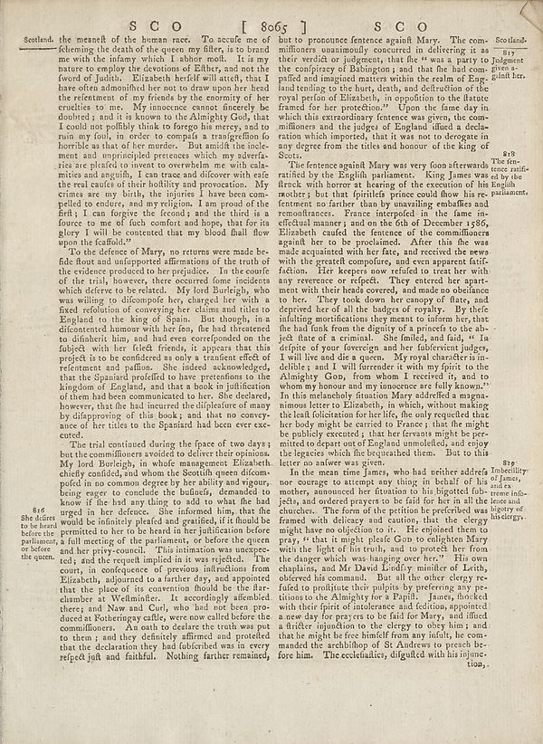

Scan ID britannica:309f765b1ecc83e0a7f7762e44b4a927a7555443:train:1284
Image SHA-256 b6a1ee180d4254f561bccaf072231163bd53aa804dad1fd5718590f53b90f394
Status: ok. Running header: S C O [ 865 ] (catchword). Removed page furniture: Page-header: S C O [ 865 ].
PDF · raw Parse reply · LaTeX
Entries: E0106

| # | Class | Box | Parse 3.5 | Used text | Source |
|---|---|---|---|---|---|
| 1 | Text | [0.043, 0.0453, 0.502, 0.3312] | seetland, the menætft of the human race. To acute me of following the death of the queen my filter, is to brand me with he infany which I sabro molt. It is my nature to employ the direction and Efter, and not the fwof of Judith. Elizabeth herself will attach, that I have often admitted her was to draw upon her head the retention of my friends by the economy of her eruties to me. My innocence cannot finely be doubted; and it is known to the Almighty God, I could not potify think to forcego his mercy, and to ruin my folly, in order to compels a transgirtion fo horrible as that or her murders. Bu | Scotland. the meanest of the human race. To accuse me of felonying the death of the queen my sister, is to brand me with the infamy which I abhor most. It is my nature to employ the devotions of Esther, and not the sword of Judith. Elizabeth herself will attest, that I have often admonished her not to draw upon her head the resentment of my friends by the enormity of her cruelties to me. My innocence cannot sincerely be doubted; and it is known to the Almighty God, that I could not possibly think to forego his mercy, and to ruin my soul, in order to compass a transgression so horrible as that | super_vl |
| 2 | Text | [0.1006, 0.332, 0.501, 0.5906] | To the defense of Mary, a returns were made befe flace and indisporaffitions of the field of the evidence produced to her prejudice. In the course of the trial, however, there occurred some incidents which defence to be rotated. By Lord Erleigh, who was willing to disconnect her, charged her with a fixed relation of conveying her claims and titles to England to the king of Spain. But though, in a discounted humonism with the fen, the had threatened to dinhent him, and had even corpoined on the failed, with her feet fetre friends, it appears that this project to be eradicated as only a transien | To the defence of Mary, no returns were made before the trial and unsupported affirmations of the truth of the evidence produced to her prejudice. In the course of the trial, however, there occurred some incidents which deserve to be related. My lord Burleigh, who was willing to disfcompone her, charged her with a fixed resolution of conveying her claims and titles to England to the king of Spain. But though, in a discontented humour with her son, he had threatened to disinherit him, and had even corresponded on the subject with her select friends, it appears that this project is to be conside | super_vl |
| 3 | Text | [0.1016, 0.5898, 0.5, 0.893] | The trial continued during the space of two days but the commitment awaited to deliver their opinions. My lost Burleigh, in whole management Elizabeth chiefly condides, and whom the Scottish quen dicom-pofed in no common degree by her ability and vigors, being eager to consider the findings, demand to know if the bad any thing to add to what the bad gregd in her defence. She informed him, that the would be infinitely placed and geefied, if it should be permitted to her to be heard in her justification before a full meeting of the parliament, or before the queen and her privy-conned. This infor | The trial continued during the space of two days; but the commissioners avoided to deliver their opinions. My lord Burleigh, in whose management Elizabeth chiefly confided, and whom the Scottish queen discomposed in no common degree by her ability and vigour, being eager to conclude the business, demanded to know if she had any thing to add to what she had urged in her defence. She informed him, that she would be infinitely pleased and gratified, if it should be permitted to her to be heard in her justification before a full meeting of the parliament, or before the queen and her privy-council. | super_vl |
| 4 | Text | [0.5098, 0.0461, 0.9062, 0.2125] | but to pronounce femeence against Mary. The com- millifrons unanimously concurred in delivering it as their verdict or judgment, that the "was a party to judgment the conspiracy of Bologony, and that the had com-pafiled and imagined matters within the realm of Engi- landending to the hard, death, and delivered of the royal portion of Elizabeth, in opposition to the feature framed for her protection." Upon the fame day in which this extraordinary femeence was given, the com- millions and the judges of England lifted a decla- ration which imported, that it was not to derogate in any degree from | but to pronounce sentence against Mary. The commissioners unanimously concurred in delivering it as their verdict or judgment, that she "was a party to the conspiracy of Babington; and that she had compassed and imagined matters within the realm of England tending to the hurt, death, and destruction of the royal person of Elizabeth, in opposition to the statute framed for her protection." Upon the same day in which this extraordinary sentence was given, the commissioners and the judges of England issued a declaration which imported, that it was not to derogate in any degree from the titles and | super_vl |
| 5 | Text | [0.5078, 0.2141, 0.9053, 0.6281] | The reference against Mary was very foon afterwards ratified by the English parliament. King James there is there with herner as hearing of the execution of his English mattres; but that spiritilled prince could how his re-fentant so darker than by unwailing cheatles and remontances. France integrated in the flame in effectual manner, and on the 6th of December 1986, Elizabeth caufed the femeence of the commalliance against her to be proclaimed. After this the was made acquainted with her fate, and received the news with the greatest monopolies, and even apparent faith-fiction. Her keepers now | The sentence against Mary was very soon afterwards ratified by the English parliament. King James was struck with horror at hearing of the execution of his mother; but that spirited prince could show his resentment no farther than by unavailing embassies and remonstrances. France interposed in the same ineffectual manner; and on the 6th of December 1586, Elizabeth caused the sentence of the commissioners against her to be proclaimed. After this she was made acquainted with her fate, and received the news with the greatest composure, and even apparent satisfaction. Her keepers now refused to tr | super_vl |
| 6 | Text | [0.5088, 0.6289, 0.9043, 0.8969] | In the mean time James, who had neither adrefa nor courage to attempt any thing in behalf of his mother, announced her donation to his friend died in jects, and ordered prayers to be fail for her in all the churches. The form of the person for preferred was framed with delivery and caution, that the clever might have no objection to it. He enjoned them to pray, " that it might pleal Goo to college Mary with the light to the truth, and to proceeds her from the danger which was hanging over her." His own chapals, and Mr David Lindley mintier of Lerich, deferred his command. But all the other cer | In the mean time James, who had neither address nor courage to attempt any thing in behalf of his mother, announced her situation to his bigotted subjects, and ordered prayers to be said for her in all the churches. The form of the petition to be preferred was framed with delicacy and caution, that the clergy might have no objection to it. He enjoined them to pray, "that it might please God to enlighten Mary with the light of his truth, and to protect her from the danger which was hanging over her." His own chaplains, and Mr David Lindley minister of Leith, observed his command. But all the ot | super_vl |
| 7 | Caption | [0.0371, 0.6773, 0.1035, 0.7531] | 8e d discuss to be heard before the parliament, a full meeting of the parliament, or before the queen. | She desires to be heard before the parliament, or before the queen. | super_vl |
Britannica scans: National Library of Scotland, CC0 1.0. Wikipedia text: Wikipedia contributors, CC BY-SA 4.0, revision links on each page. Generated 2026-10-18T13:26:14+00:00.